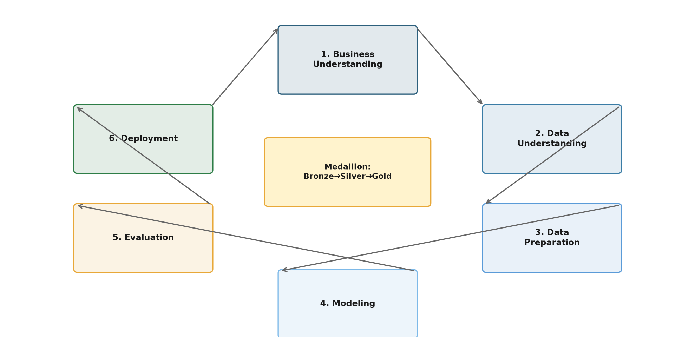
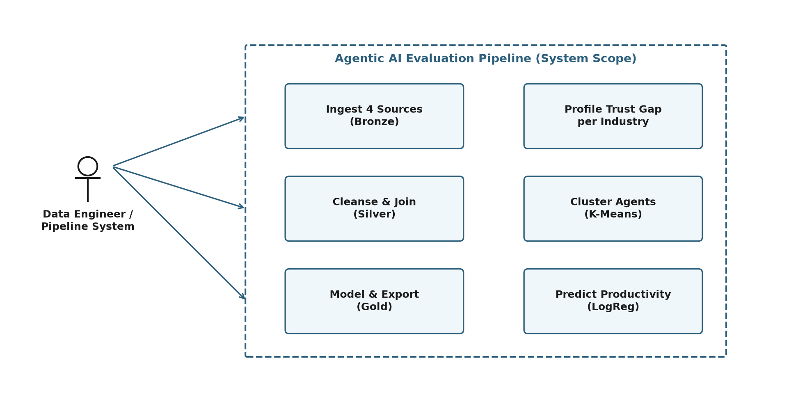
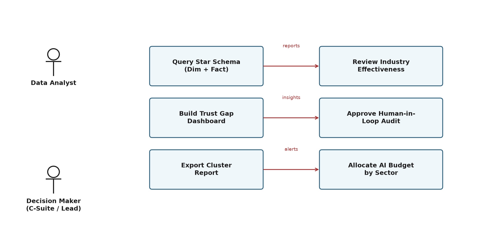

This project walks through the making of a Spark-powered pipeline that starts with raw data and ends with a practical question: are our AI agents actually earning the trust of the people using them? The pipeline processes 5,500 records from four different sources, cleans and joins them using the Medallion pattern, and applies both clustering and classification to separate high-performing deployments from the rest. The Silver layer applies median imputation per industry, normalizes benchmark keys (fixing a 19% join loss), and enriches records with NLP-derived sector citations. The Gold layer produces a star schema: an industry summary dimension (11 rows) and an enriched fact table (5,500 rows). Unsupervised K-Means clustering (silhouette 0.522) identifies three performance tiers—High, Average, and Low Performer—while multinomial Logistic Regression predicts productivity category from system telemetry alone (59.3% accuracy, 52.6% macro F1). A cross-industry trust gap analysis reveals that only Government agencies exhibit trust exceeding benchmarks (+3.92), whereas Technology (−16.23), Financial Services (−11.39), and Logistics (−11.30) show substantial deficits. The pipeline executes in ~53 seconds on constrained hardware (1 GB driver memory).
Artificial intelligence agents are increasingly making decisions that were once entirely human. However, deploying them at scale introduces challenges in monitoring and evaluation. This pipeline offers an automated mechanism to ingest, process, and analyze deployment telemetry.
More concretely, the project set out to achieve four measurable outcomes: (1) ingest and process at least 5,000 deployment records without data loss; (2) achieve zero nulls in critical join columns after Silver cleansing; (3) produce a K-Means clustering with silhouette score above 0.50; and (4) train a multiclass classifier that beats the random baseline of 33% by at least 20 percentage points. These four targets served as go/no-go gates throughout development.
Reading across these 25 papers, a clear pattern emerges. Earlier work (2018-2021) focused almost exclusively on single-agent efficiency - how fast a bot completes a task, measured in isolation. The field shifted around 2022, when researchers started asking harder questions about governance, trust calibration, and cross-system fairness. What is still missing, however, is a practical framework that ties trust metrics back to operational benchmarks in a way that deployment teams can act on - and that is exactly the gap this pipeline addresses.
The methodology follows CRISP-DM, the most widely used framework for data mining projects. It was chosen because its cyclical phases align naturally with Medallion architecture layers.

The pipeline follows the Bronze → Silver → Gold pattern. Bronze captures raw ingestion with lineage columns (ingestion_date, data_source). Silver standardizes categoricals to lowercase, casts numerics, imputes missing values using per-industry medians (avoiding global mean bias), joins normalized benchmarks (regexp_replace(Industry, '_', ' ')), merges execution logs, and maps OpenAlex paper titles to five sectors via keyword regex. Derived columns include Productivity_Category (low/medium/high) and Trust_vs_Benchmark_Gap. Gold exports two marts: industry_ai_summary (dimension) and ai_enriched_agentic_leadership (fact).
K-Means uses three features—Task Success Rate, Productivity Improvement, Leadership Trust Score—scaled with StandardScaler. k=3 was selected via elbow method (silhouette: k=2 0.54, k=3 0.52, k=4 0.52). Clusters are labeled by productivity centroid: High (25.4%), Average (14.1%), Low (7.3%). Logistic Regression predicts Productivity_Category from five system telemetry features only (Context Awareness, Response Time, Task Complexity Level, Adoption Success Level, Error Count)—no outcome leakage. GridSearchCV (3-fold) selects C=10. Multinomial loss with 200 iterations.
Understanding who uses the pipeline and how they interact with its components is essential for scoping the architecture.

The workflow flows from data processing (System Actor) down to the Data Analyst who queries findings, and finally the Decision Maker who acts upon them.

Each point represents a deployment. Colors denote industry. The spread shows that higher trust scores do not uniformly translate to higher productivity gains—cluster assignment captures the interaction better than either metric alone.
| Industry | Deployments | Avg Success Rate | Avg Productivity % | Trust Gap |
|---|
Trust Gap = Internal Trust Score − Industry Benchmark. Positive values indicate organizations trust their agents more than the industry norm; negative values reveal a trust deficit. Only Government (+3.92) is positive. Technology (−16.23) has the deepest gap, followed by Financial Services (−11.39) and Logistics (−11.30).
The original benchmark keys used underscores (Financial_Services) while the main dataset used spaces (Financial Services). This mismatch caused 1,047 records (19%) to lose benchmark context. The fix—regexp_replace(col('Industry'), '_', ' ') before joining—restored full coverage and changed the Trust Gap narrative: Financial Services and Professional Services shifted from NULL to −11.39 and −5.63 respectively.
One honest admission: the 59.3% accuracy figure was initially disappointing. I had expected something closer to 70% given how clean the dataset looked. But digging into the confusion matrix - particularly the confusion around the Medium class - taught me that good data engineering does not automatically produce good predictions. The real value of this pipeline is not the model's ability to guess productivity category from telemetry alone; it is the trust gap analysis and cluster segmentation, which tell a richer story about where AI agents thrive and where they struggle.
High Performers (2,361 deployments) achieve 25.4% average productivity improvement with 76.4% success rate and 61.2 trust score. Low Performers (1,825) show 7.3% productivity, 70.9% success, and 53.9 trust. The 18-point productivity spread validates the clustering. Average Performers (1,314) sit in the middle but exhibit higher variance in trust scores.
Accuracy of 59.3% exceeds the 33% random baseline for three classes, but the Medium class remains difficult (F1 0.39) due to overlap with both High and Low in feature space. Using only system telemetry avoids leakage but sacrifices predictive power from outcome variables. Adding contextual features (industry, agent type) would improve accuracy but reduce the model's utility as a leading indicator.
An effectiveness score combining trust gap, productivity, and success rate ranks Government (52.84) and Education (52.76) highest, while Technology ranks lowest (50.34) despite high deployment volume. This suggests sectors with stronger regulatory frameworks achieve better trust alignment.
At a broader level, this project has been a lesson in the gap between textbook data engineering and real-world messiness. The underscore-vs-space issue that silently dropped 19% of benchmark joins is the kind of bug that would never appear in a tutorial but can quietly break an entire analysis. Fixing it - and catching similar issues - is exactly what makes this pipeline more than just a collection of Spark transformations.
What I hope this pipeline demonstrates is that good evaluation does not need a sophisticated model. A K-Means with silhouette 0.522 and a Logistic Regression at 59.3% accuracy are far from state-of-the-art, but they are enough to surface actionable insights - like where trust is breaking down or which sectors are ready for production deployment. The star schema and dashboard then make those insights accessible to people who do not write code.